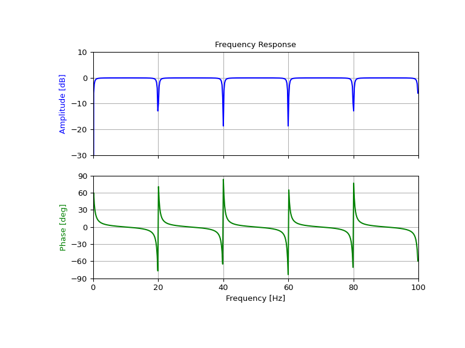

scipy.signal.iircomb(w0, Q, ftype='notch', fs=2.0)[source]¶
Design IIR notching or peaking digital comb filter.
A notching comb filter is a band-stop filter with a narrow bandwidth
(high quality factor). It rejects a narrow frequency band and
leaves the rest of the spectrum little changed.
A peaking comb filter is a band-pass filter with a narrow bandwidth
(high quality factor). It rejects components outside a narrow
frequency band.
Parameters
w0float
Frequency to attenuate (notching) or boost (peaking). If fs is
specified, this is in the same units as fs. By default, it is
a normalized scalar that must satisfy 0<w0<1, with
w0=1 corresponding to half of the sampling frequency.
Qfloat
Quality factor. Dimensionless parameter that characterizes
notch filter -3 dB bandwidth bw relative to its center
frequency, Q=w0/bw.
ftype{‘notch’, ‘peak’}
The type of comb filter generated by the function. If ‘notch’, then
it returns a filter with notches at frequencies 0, w0,
2*w0, etc. If ‘peak’, then it returns a filter with peaks at
frequencies 0.5*w0, 1.5*w0, 2.5*w0`, etc.
Default is ‘notch’.
fsfloat, optional
The sampling frequency of the signal. Default is 2.0.
Returns
b, andarray, ndarray
Numerator (b) and denominator (a) polynomials
of the IIR filter.
Raises
ValueError
If w0 is less than or equal to 0 or greater than or equal to
fs/2, if fs is not divisible by w0, if ftype
is not ‘notch’ or ‘peak’
For implementation details, see [1]. The TF implementation of the
comb filter is numerically stable even at higher orders due to the
use of a single repeated pole, which won’t suffer from precision loss.
>>> fs=200.0# Sample frequency (Hz)>>> f0=20.0# Frequency to be removed from signal (Hz)>>> Q=30.0# Quality factor>>> # Design notching comb filter>>> b,a=signal.iircomb(f0,Q,ftype='notch',fs=fs)
>>> # Frequency response>>> freq,h=signal.freqz(b,a,fs=fs)>>> response=abs(h)>>> # To avoid divide by zero when graphing>>> response[response==0]=1e-20>>> # Plot>>> fig,ax=plt.subplots(2,1,figsize=(8,6))>>> ax[0].plot(freq,20*np.log10(abs(response)),color='blue')>>> ax[0].set_title("Frequency Response")>>> ax[0].set_ylabel("Amplitude (dB)",color='blue')>>> ax[0].set_xlim([0,100])>>> ax[0].set_ylim([-30,10])>>> ax[0].grid()>>> ax[1].plot(freq,np.unwrap(np.angle(h))*180/np.pi,color='green')>>> ax[1].set_ylabel("Angle (degrees)",color='green')>>> ax[1].set_xlabel("Frequency (Hz)")>>> ax[1].set_xlim([0,100])>>> ax[1].set_yticks([-90,-60,-30,0,30,60,90])>>> ax[1].set_ylim([-90,90])>>> ax[1].grid()>>> plt.show()

Design and plot peaking comb filter at 250 Hz for a
signal sampled at 1000 Hz, using quality factor Q = 30
>>> fs=1000.0# Sample frequency (Hz)>>> f0=250.0# Frequency to be retained (Hz)>>> Q=30.0# Quality factor>>> # Design peaking filter>>> b,a=signal.iircomb(f0,Q,ftype='peak',fs=fs)
>>> # Frequency response>>> freq,h=signal.freqz(b,a,fs=fs)>>> response=abs(h)>>> # To avoid divide by zero when graphing>>> response[response==0]=1e-20>>> # Plot>>> fig,ax=plt.subplots(2,1,figsize=(8,6))>>> ax[0].plot(freq,20*np.log10(np.maximum(abs(h),1e-5)),color='blue')>>> ax[0].set_title("Frequency Response")>>> ax[0].set_ylabel("Amplitude (dB)",color='blue')>>> ax[0].set_xlim([0,500])>>> ax[0].set_ylim([-80,10])>>> ax[0].grid()>>> ax[1].plot(freq,np.unwrap(np.angle(h))*180/np.pi,color='green')>>> ax[1].set_ylabel("Angle (degrees)",color='green')>>> ax[1].set_xlabel("Frequency (Hz)")>>> ax[1].set_xlim([0,500])>>> ax[1].set_yticks([-90,-60,-30,0,30,60,90])>>> ax[1].set_ylim([-90,90])>>> ax[1].grid()>>> plt.show()